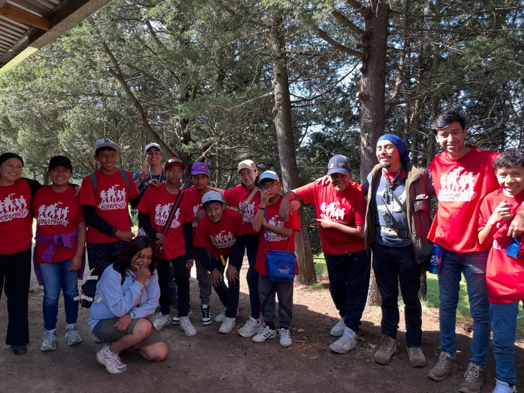
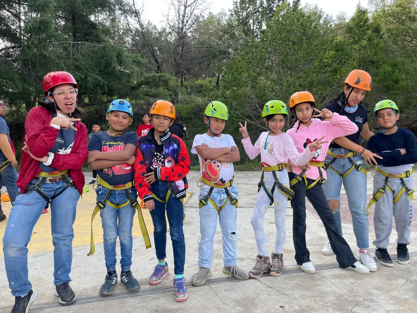

REGISTRO
Cada hora cuenta.
Envía tus horas al terminar cada jornada. La coordinación las revisará y las aprobadas se sumarán a tu avance.
Consultar mi avance
SERVICIO SOCIAL

01 / ENCUENTROS
Cargando actividades…
02 / NUESTRO ESPACIO
Cada actividad es una oportunidad para conectar con otras personas y aportar algo valioso.

03 / AL DÍA
REGISTRO
Envía tus horas al terminar cada jornada. La coordinación las revisará y las aprobadas se sumarán a tu avance.
Consultar mi avanceCOMUNIDAD
Acércate a la coordinación para conocer las oportunidades de participación disponibles.